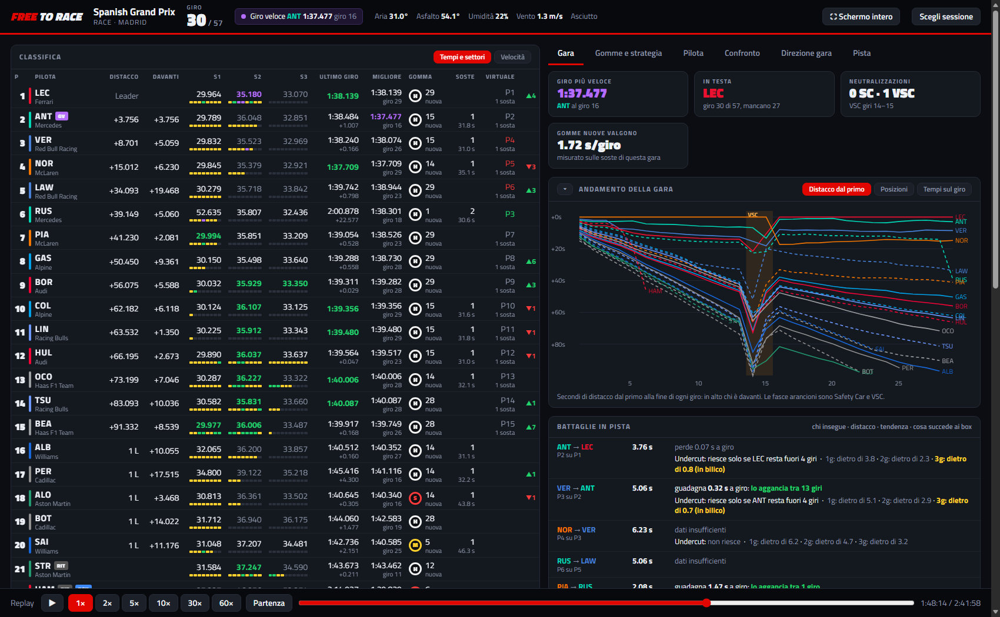
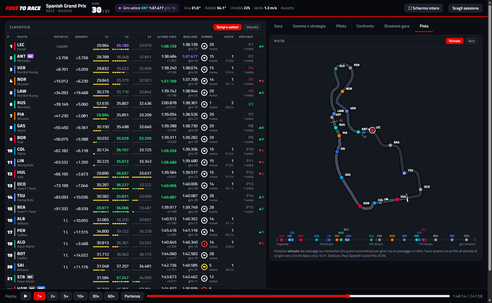
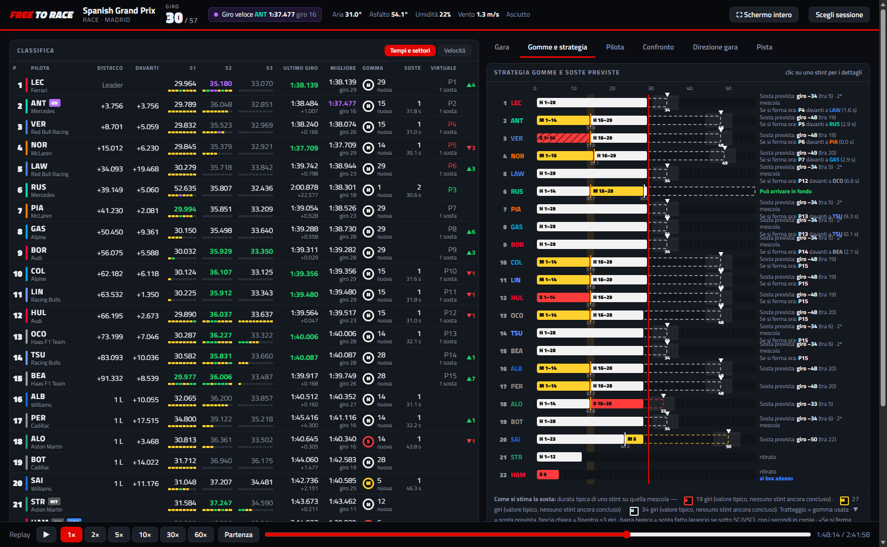

📱 Free to Race on your phone

Scan with your phone’s camera: the app opens and you install it with one tap. Free, no store, no account.
Scan with your phone’s camera: the app opens and you install it with one tap. Free, no store, no account.
Live timing, tyre strategy, pit-stop forecasts and the track with every car: free, no account, on PC and phone.
It takes the public data of the official timing and makes sense of it.

Without a subscription, F1 does not send car positions. Free to Race shows them anyway, live, on a map of the circuit.
Live win and podium chances, recalculated every lap. Where each driver would rejoin after a stop, the cheap stop under Safety Car, and the chance an undercut works. Checked on 41 races.
Gaps, purple and green sectors, the mini-sectors of the current lap, tyres, pit stops and a virtual standing that accounts for stops still to come.
Pace over the last clean laps, degradation of each tyre, how much fresh tyres are worth, and lap-by-lap comparison of two drivers.
Set the delay and the timing arrives together with the pictures, no spoilers. Every live session is recorded.
Download any session from the public archive and replay it from 1× to 60×, with a timeline to jump around.


Free to Race is made by one fan in spare time. If you enjoy it, a coffee helps keep it working race after race.
The calendar on the map, with the winners of the races already run.
| Pos | Driver | Team | Wins | Points |
|---|
| Pos | Team | Points |
|---|
This season's teams and their drivers, in championship order.
It’s a bit like a certain Japanese engine: a rough start and a few too many breakdowns, but give it some patience and it can do great things. If you find a bug (or it won’t start at all), write to us! Every suggestion is welcome.
Found a bug? In the program use 🐞 Report a problem (in Choose session): it prepares the email with your version and the last lines of the log, and you see everything before sending.